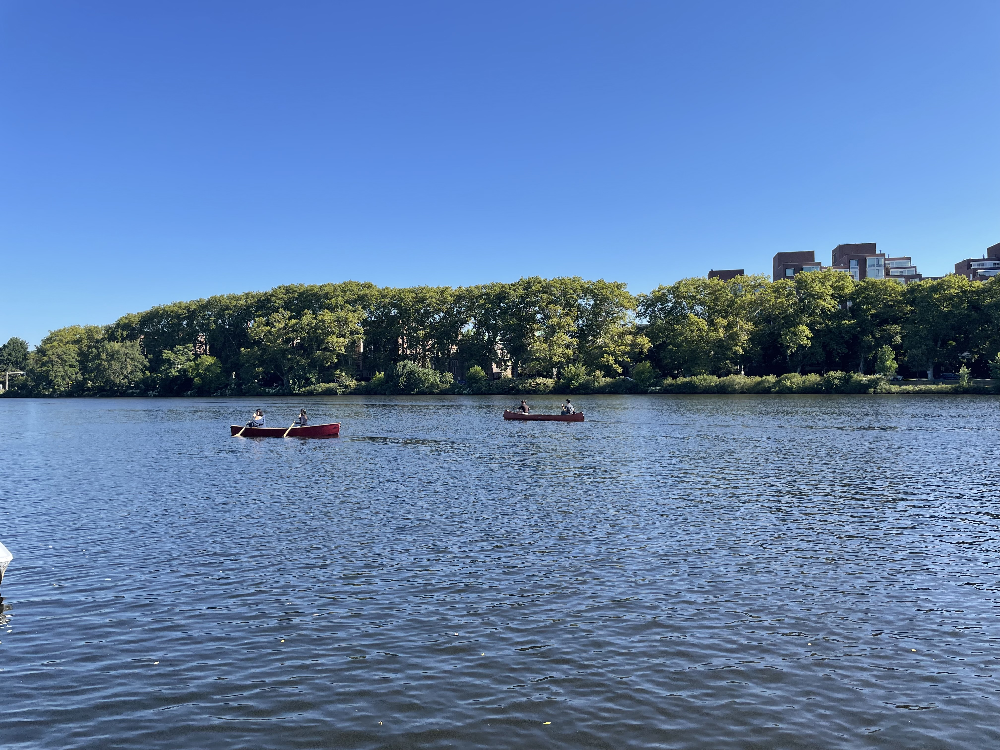

### Week 2: Learning from Precedent
Meet at the Newell Boat House on the Charles River. Try paddling in different canoes; compare their stability, maneuverability and other attributes.
Assignment: Discuss parts you’ll need, team roles and responsibilities. Determine design parameters for your team’s canoe. Use the budget template to determine how your team will spend your budget.

<video controls>
<source src="paddling.mp4" type="video/mp4">
</video>
<iframe width="750" height="465" src="https://www.youtube.com/embed/r7CnRb4h0oI" title="BUILDING A PLYWOOD CANOE - PART 1 #canoebuild #DIYcanoe" frameborder="0" allow="accelerometer; autoplay; clipboard-write; encrypted-media; gyroscope; picture-in-picture; web-share" referrerpolicy="strict-origin-when-cross-origin" allowfullscreen></iframe>